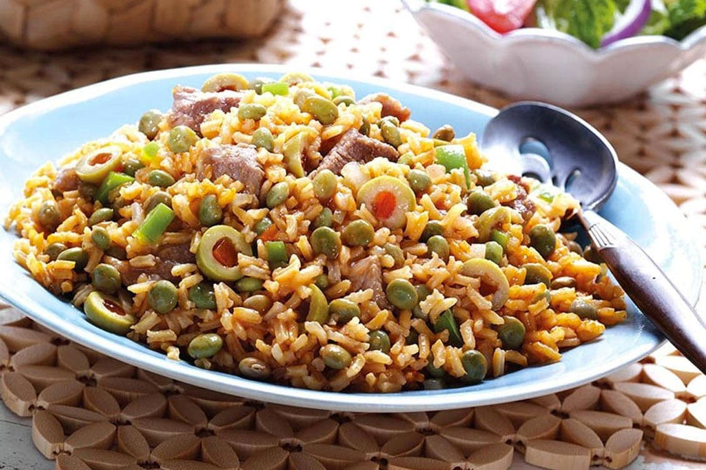
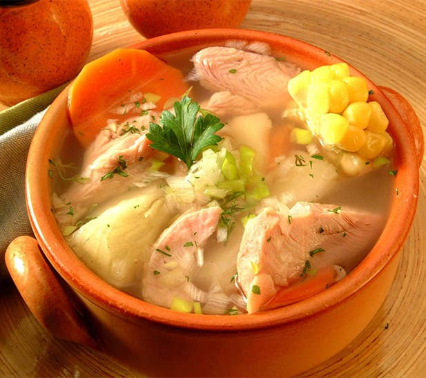

Especialidades destacadas

Arepas

Arroz con Gandules

Ceviche Criollo

Sancocho
Tostones
Bienvenido a El Cocinero - Donde la Tradición se Encuentra con la ExperienciaQueridos amigos y amantes de la buena comida, En nuestro rincón gastronómico, queremos compartir contigo algo más que platillos deliciosos; queremos llevarte en un viaje de sabores auténticos que capturan la esencia misma de la comida criolla... En cada bocado, encontrarás la magia de recetas transmitidas de generación en generación, llenas de tradición y amor. En nuestro restaurante, la autenticidad es nuestra clave, y cada plato es una obra maestra que refleja la riqueza cultural y culinaria de nuestra tierra. Desde exquisitos guisos hasta suculentos platos de arroz, cada elección en nuestro menú es una invitación a disfrutar de la cocina criolla en su máxima expresión. Te prometemos una experiencia culinaria que va más allá del paladar; es un abrazo de sabores que despiertan recuerdos, un recordatorio de la importancia de disfrutar de la buena comida en buena compañía. Estamos emocionados de compartir contigo nuestra pasión por la cocina criolla y de llevarte a un viaje sensorial que despertará tus sentidos. ¡Te invitamos a deleitarte con la deliciosa variedad que ofrecemos en nuestro restaurante! Bienvenido a un lugar donde la autenticidad y la buena comida se fusionan para crear momentos inolvidables. Con cariño y sazón, |
Especialidades destacadas
Arepas
Arroz con Gandules
Ceviche Criollo
Sancocho
Tostones
|
¡Bienvenido a [El Cocinero]! Descubre la auténtica esencia de la comida criolla en un ambiente acogedor. Explora nuestras especialidades y haz tu reserva ahora para una experiencia culinaria única. |